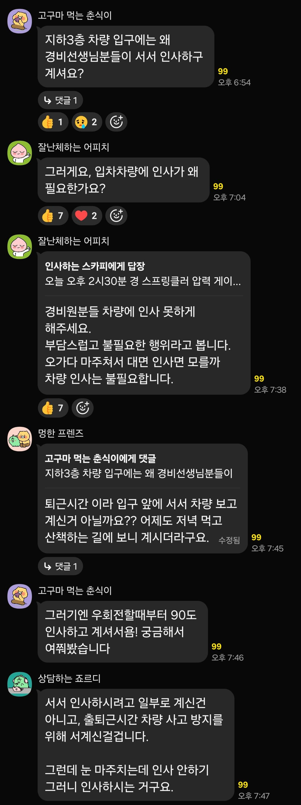

그것은 내가 살고있는 아파트ㅋㅋㅋㅋㅋ 경비아저씨가 출퇴근시간에 인사한다고 불편하다함ㅋㅋㅋ

그것은 내가 살고있는 아파트ㅋㅋㅋㅋㅋ 경비아저씨가 출퇴근시간에 인사한다고 불편하다함ㅋㅋㅋ
출퇴근 시간에 경비가 왜 필요함ㅋㅋㅋ
자발적으로 하는 인사를 가지고 저러는거면 얼탱이가 없는거고, 강제로 하라고해서 하는 인사면 없애는게 맞지
뭐 혹시라도 주민대표가 갑질하는건가 싶어서 그런걸수도 있지
꼭필요한거 아니면 서로 편하게 가는게 좋잖아
제목을 병신같이 썼네
어르신들 예우해주는 거 아님?? 인사하는게 꼬와서 하는 채팅은 아닌 것 같은데?
댕청
난 경례해주셨으면좋겠다..
멍청붐업
90도인사면 불편할만한데 누가 강요한거 아닌가싶어서 말하는거같고
누가 시킨거라면 그 시킨 사람도 글쓴이랑 같은식으로 얘기했을거임
‘거 아침에 주민들한테 인사도좀 하고 그러면 다들 기분이 좋지않겠어요? 허허허허허’
아는 사람끼리 하면 개 꿀잼 인사치롄데...
나는 내차 틴팅이 10~15% 라서 그냥 환히 보이는 터라.
내가 먼저 경례하거든... 근데.. 다른 차들은 그게 아닐텐데 좀 아니지..
일단 글쓴이 지능이 낮은건 확실함
지능이 낮지만 부모 잘 만난 케이스 같음 ㅇㅇ
경비분들한테 갑질하는 아파트로 보일수도 있고
아니 애초에 부자연스러운 일이니까..
연세때문에 허리도 안좋은 경비분들 많을텐데 좀 억지스러운 행위?
인사는 눈 마주칠 때 목례하면 되는데 굳이 90도는 좀......
당연히 90도 인사하면 불편하지 이거 제정신인가? 갑질 존나 한거처럼 보이는데ㅋㅋㅋㅋㅋㅋ 차량 사고 방지는 그냥 둘러댄거일 확률 99퍼센트 어떤 애미 좆병신새끼가 갑질한거 그대로 말 할 순 없으니까
근데 인사를 받으면 나도 인사를 해야 하는데 운전 중에 차 움직이고 있는데 고개를 숙이면 좀 위험하더라고 차라리 경례가 나을지도 나도 경례 하면 되니까
나도 굳이라 생각
90도 인사는 좀 불편할것 같긴 해ㅋㅋ...
저게 욕으로 보이냐?
젊은층일수록 진짜로 불편해하니까 서로 안하는 문화가 맞는듯
의욕 넘치는 신입 고령 경비원이 자발적으로 하는 경우도 많아서
글쓴새끼 지능이 좀 떨어지나 ㅋㅋ 아님 순수한거냐 사람말을 듣는 그대로 해석하네 ㅋㅋ
입주민들이 누군가 강제로 시켜서 하는 걸수도 있어서 테클걸어주는거 같은데... 좋은 의도로 보임.
그럼 가서 물어보던가
아저씨 왜 서서 인사하고 계십니까
강제로 하는걸까봐 불편하다고 하느거겠지
차량한테 90도 인사면 당연히 불편하지. 과거로 치면 말 타고 있는 사람한테 인사하는거랑 똑같으니까. 모양새가 좀 그럼.
아니 뭐 자기일 하시다가 지나가면서 인사는 몰라도 세워놓고 인사시키는건 좀 글차나
우리 아파트 경비도 저렇게하는데 진짜 존나불편해. 왜냐면 밖에선 안을보고 인사하는데 안에선 밖으로 인사로 답해줄수가 없거든. 잘안보여서. 꾸벅하긴하는데 안보일거같고
그래서 어르신 인사 쌩까는느낌나...
차량 통제가 아니라 인사 목적으로 계시는건 부담되긴하더러
머 입주민 일동의 일동담당임?
인사하는거 불편해
누가 시켜서 그런거면 그러지말자라고 말하는거 아니냐?
글쓴이 좀 안쓰럽네
아니 이걸 맥락을 못 읽는다고?
답답하네
제목이 왜이래
글쓴이 병신이야?
경비원분들이 저렇게 90도 인사하는걸 당연하게 생각하는 새끼들이 있구나..
요즘은 저런식으로 못하게 안막으면 갑질로 번짐
에휴 개붕아...
어디서는 90도로 인사 안한다고 갑질하는걸 본 적 잇는것 같은데..
뭐 병신같은 대단한 아파트엿던것 같음
인사 하지마라는 게 다른 사람이 갑질한 거 수습하는 걸로 보이는데
저렇게 누가 말 안하면 저 경비원은 계속 인사해주는게 업무됨